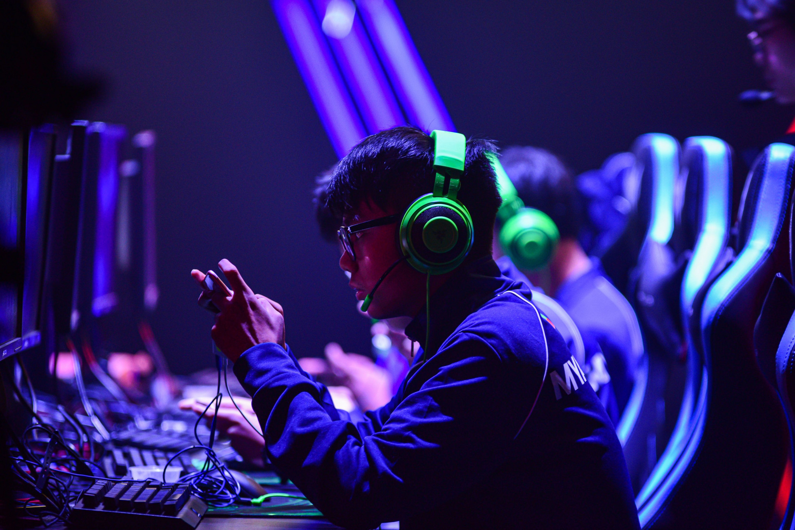

De term esports is een samenvoeging van de woorden electronic en sports. De meest gangbare definitie is het competitief spelen van multiplayer-videogames op professioneel niveau. Dit kan, afhankelijk van de titel, op een PC, console of zelfs een tablet of mobiele telefoon..
De term esports is een samenvoeging van de woorden electronic en sports. De meest gangbare definitie is het competitief spelen van multiplayer-videogames op professioneel niveau. Dit kan, afhankelijk van de titel, op een PC, console of zelfs een tablet of mobiele telefoon..
Esporters trainen gemiddeld 30 uur per week om hun vaardigheden te perfectioneren, en nemen dat (terecht!) heel serieus. In zekere zin zijn esports dan ook een vorm van topsport.
Voor sommige toernooien worden hele voetbalstadions afgehuurd. Het heeft ook wel wat weg van een WK voetbal: het grootste esports-evenement ooit ging door in Polen en lokte 173.000 bezoekers, met nog eens 46 miljoen online kijkers.

De esports-community blijft groeien, waardoor sommige bedrijven de competities zien als een opportuniteit om reclame te maken. De beste spelers laten zich dan ook sponsoren door merken als Redbull, Nike en Puma.
Tegenwoordig zijn de eSports zeer groot, zelfs uitgegroeid tot een miljardenbusiness. Electronic Sports zijn voornamelijk populair in Azië en de Verenigde Staten. Maar ook in Nederland komt er steeds meer aandacht voor deze sporttak. Hieronder geven wij een korte uitleg over de vier bekendste genres binnen de eSport en vertellen wij meer over de geschiedenis van de eSports.